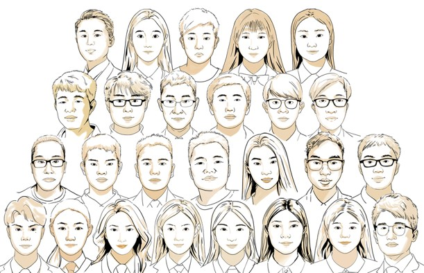

Opportunities
We are always looking for motivated individuals passionate about bioanalytical science.

We welcome applications from students with backgrounds in chemistry, biomedical engineering, materials science, or related fields. Strong analytical and communication skills are valued. Admitted through the SUSTech graduate school.
Candidates with a Ph.D. in chemistry, biomedical engineering, or a closely related discipline are encouraged to apply. Please send a CV, a brief research statement, and contact information for three references.
SUSTech undergraduates interested in hands-on research experience are welcome to reach out. We offer opportunities through the university's undergraduate research program.